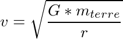

Les problèmes informatiques
Les bugs sont considérés comme des problèmes majeurs pour les programmes spatiaux. En effet, ils en sont occasionnellement victimes et les conséquences sont alors souvent très coûteuses. Les programmes destinés à l’espace sont pourtant testés et développés avec des langages de programmation évolués (pour éviter les erreurs les plus courantes).
Les bugs peuvent être d’origines diverses mais le plus souvent, ils sont d’origine humaine : « Errare humanum est ». L’être humain est en effet responsable de 51% de ces erreurs, comme le montre le graphique ci-dessous, contre 34% pour les logiciels et 15% pour le matériel [1].
- Données d’après A. Fox et D. Patterson (Extrait de Pour la science 2003)
- Graphique réalisé sous LibreOffice
Exemples de bugs historiques
Lors du premier décollage
d’Ariane 5 Ariane 5 Ariane 5 est le lanceur le plus rentable de l’Histoire, il est aujourd’hui encore utilisé par l’ESA.
(vol 501), la fusée a explosé au bout de 37 secondes à cause d’un bug
informatique. Après de nombreuses recherches, on pense aujourd’hui que le bug était
dû à une variable mal dimensionnée (trop grande) pour la zone qu’on avait
besoin de lui attribuer.
Mars Climate Orbiter est aussi un exemple de bug historique : la sonde a été
perdue alors qu’elle s’approchait de Mars. D’après une enquête de la
NASA NASA 
National Aeronautics and Space Administration est l’agence gouvernementale qui s’occupe du programme spatial civil des États-Unis. ,
cela venait d’une erreur d’unité sur les données d’accélération.
Les ingénieurs du Lockheed Martin Astronautics (Colorado) fournissaient ses données
en livres, une unité du système anglais, alors que les ingénieurs du Jet
Propulsion Laboratory (Californie) les rentraient dans les ordinateurs en considérant
que ces données représentaient des Newtons (unité du système international).
Or une livre équivaut à 4,48 Newtons.
Les problèmes de réapprovisionnement
Lorsqu’un humain est dans l’espace pour une longue durée (stations...), il doit
être régulièrement réapprovisionné. Par exemple, l’ISS ISS La Station Spatiale Internationale est un projet international dont la construction a commencé à être réalisée en 1998 grâce à de nombreuses agences spatiales de différents pays dont la NASA, le CNES (France), le Roscosmos (Russie) , etc.
Placée sur une orbite basse (330-420km), elle est habitée en permanence par un équipage mixte et international d’astronautes et scientifiques de différentes spécialités.
Actuellement elle a une masse d’environ 400 tonnes et occupe la surface d’un terrain de football.
est réapprovisionnée depuis quelques années grâce à l’ATV ATV ATV signifie véhicule automatique de transfert européen. C’est un véhicule pouvant ravitailler l’ISS. Il a été développé par l’ESA. .
Ce module européen a pour mission de s’arrimer à la station pour y délivrer
du carburant, de l’air, de l’eau, de l’alimentation et des expériences
scientifiques.
Le dernier module ATV5 envoyé (juillet 2014) a été baptisé « Georges Lemaître » et a été lancé par Arianespace [2].
Calcul d’un arrimage de l’ATV
Un arrimage dans l’espace
est une opération particulièrement délicate qui fait appel à des calculs précis.
- ATV s’attachant à l’ISS
- ©ESA / D. Ducros (vue d’artiste)
- Schéma de l’orbite circulaire
- ©Nathan
Sirius Terminal
(échelle non respectée)
Nous allons ici étudier l’arrimage de l’ATV à l’ISS. On veut trouver la vitesse que doit avoir le module ATV pour s’arrimer à l’ISS correctement [3].
On considère qu’une seule force (force gravitationnelle) s’exerce sur l’ATV. L’accélération de l’ATV est et la masse de l’ATV est . On se place dans le référentiel .
On a les données suivantes [4] :
- Le rayon moyen de la terre est de 6 380 km et l’altitude de la station est de 350 km. Donc, la distance entre le centre de la terre et la station est r = 6 730 km.
- La masse de la Terre est d’environ
- La constante de gravitation universelle est
Selon les lois de Newton : et
Donc, grâce à ces lois, on trouve que
Si on décompose le vecteur d’accélération selon le référentiel , l’accélération vaut , on obtient :
En posant l’hypothèse que le mouvement est circulaire, on a
Donc c’est à dire que la vitesse est constante. Le mouvement est donc circulaire uniforme.
De plus :
On en déduit donc :

Soit :

Pour arrimer l’ATV, il faudra garder une vitesse d’environ 27 700 km/h à une hauteur de 350 km.